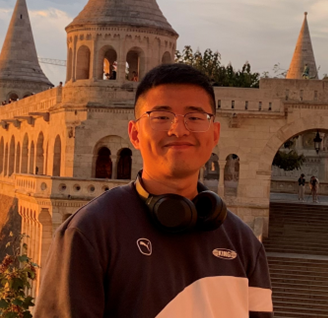
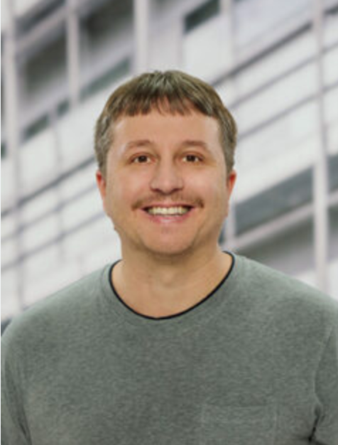
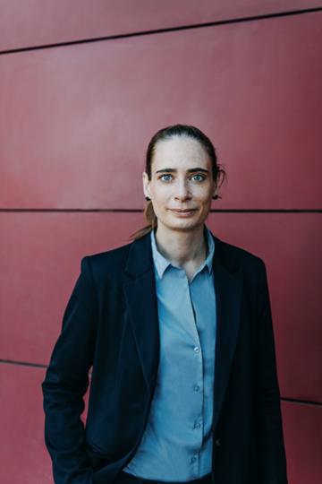
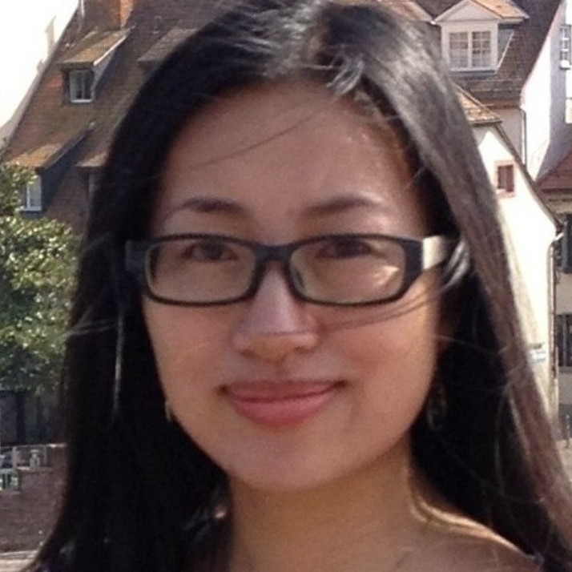
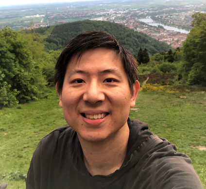

End-to-End Research Workflow, Methods, and Applications for AI-Assisted Science
Bringing together researchers advancing AI as a sustained partner in scientific discovery, across the full research workflow, the methods that power it, and the disciplines it serves.
Large (vision-) language models are transforming the practice of science — from literature search and hypothesis generation to automated experimentation, manuscript drafting, multimodal content creation, and peer review. The central question is no longer whether AI can assist with these tasks, but how such systems can support the end-to-end research workflow: sustaining long-horizon scientific reasoning, grounding their claims in causal and mechanistic understanding, adapting through interaction with real experimental environments, and serving as trustworthy partners across scientific disciplines.
AIASci brings together researchers building systems that move beyond passive analysis toward sustained reasoning, causal understanding, adaptive learning, and iterative participation in scientific discovery. Mirroring the workshop's title, the program is structured along three intersecting pillars that submissions may combine freely. Scientific responsibility (ethics, reliability, and human oversight), runs as a unifying theme throughout, featured in invited talks, contributed papers, poster sessions, and a dedicated panel discussion.
Literature search, ideation, experimentation, multimodal content creation, and peer review.
Long-context reasoning, causal inference, self-improvement, multimodal models, verification, and memory.
Physics, mathematics, chemistry, biology, medicine, and the social sciences.
Registration. Registration for the workshop is handled together with the main conference — please follow the official AIAS 2026 registration process ↗.
AIASci 2026 is a forum for presenting and discussing research on AI systems that contribute to the scientific research process. Topics include ideation, experimentation, multimodal content creation, scientific writing, and peer review, with a particular focus on sustained reasoning, causal understanding, and the ethical and responsible use of AI in science. We also welcome work that evaluates AI-assisted research workflows and assesses the quality of their outputs.
We welcome submissions on any aspect of human–AI collaboration for science, the methodological capabilities that power it, and the evaluation of AI-assisted scientific outputs. The three topics below may be combined freely in a single submission; relevant topics include, but are not limited to:
AIASci 2026 welcomes long papers (up to 8 pages of content, plus unlimited pages of references) and short papers (up to 4 pages of content, plus unlimited pages of references). Both types must follow the same formatting requirements and procedures as the AIAS 2026 main-conference papers. Reviews are double-blind, with up to three reviews per submission. Papers submitted as non-archival will be allocated presentation time at the workshop but will not be included in the proceedings. Submissions must comply with the applicable publication-ethics policy, under which AI authorship is not permitted.
Ethics-tagged track. Submissions may opt into an ethics tag, feeding directly into the workshop's dedicated panel on technical opportunity versus scientific responsibility.
There are three supported submission modes:
All deadlines are 23:59 anywhere-on-earth (UTC −12h) unless stated otherwise.




